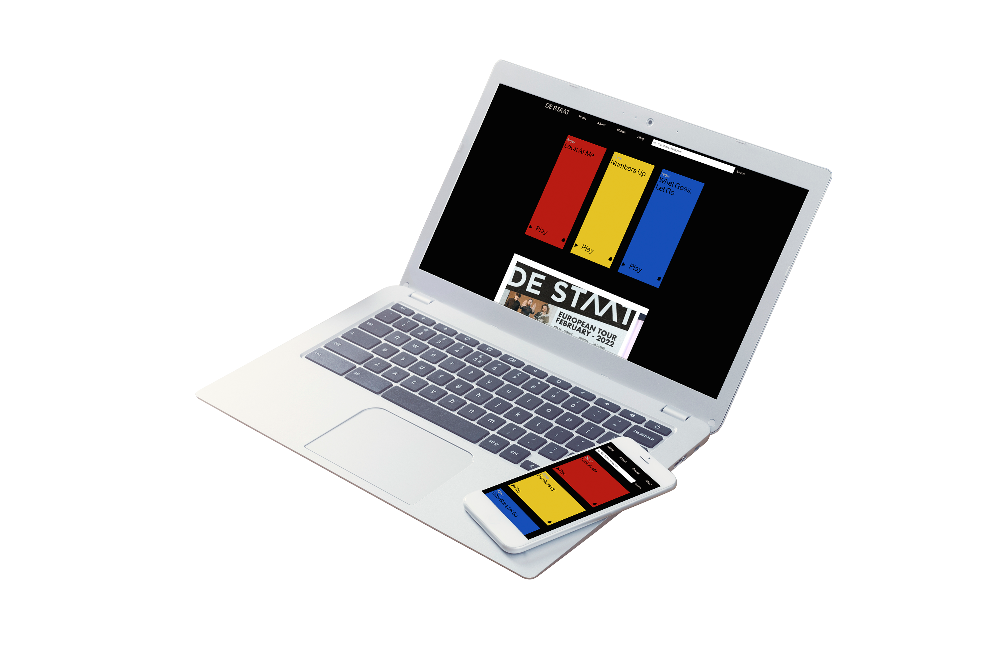
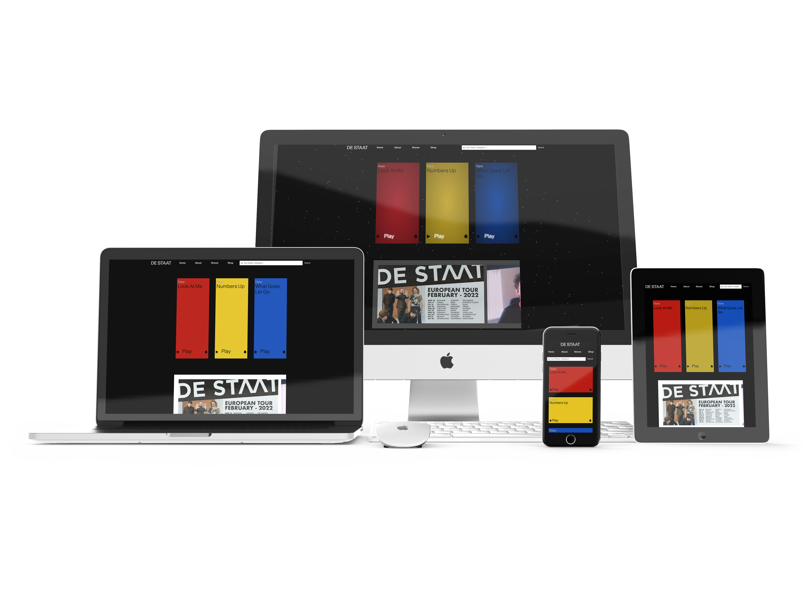

De Staat
Responsive, semantic redesign of the website by 'De Staat'
ROLE
FRONT-END DEVELOPMENT
CONTEXT
SCHOOL PROJECT
PERIOD
2021
Introduction
To become more proficient in writing code, a copy of an exisiting website was created. This was an opportunity to create a website that is better than the original - not just visually, but also within the code. This website isn't originally made by me - but it was a great tool to learn more about semantically correct coding and styling.
Go to RespositoryProcess
This project started off with analysing the website into a breakdown sketch to put into html. After this, the html could be styled intensively with CSS.
Most of the website has been created with HTML and CSS only, there are a few JS microinteractions but these are mostly used to support the CSS.
For this project I:
- created semantically correct code for a website
- made the website accessibility-friendly
- learned a lot about CSS positioning
- learned how to make a website responsive
- created different states for a lot of elements
End Result
I created a new, improved version of the website by De Staat. The website is accessible to people who use screenreaders, has a dark mode, high contrast mode, and crazy mode where laser beams appear.
In the Github repository there is a lot to be read about the process of this project. The website is accessible on every possible screen - from the smallest phone imaginable to a huge monitor.
 Visit Website